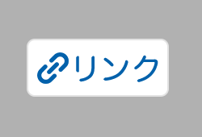

紹介料につながる準備をして、作れる一本から試す。
買った人を自分の紹介として記録するために、自分の紹介リンクを使います。先に、利用できるサービスか、どんな購入が報酬の対象か、紹介リンクが使えるかを確かめます。
そこがそろったら、手元の商品と映像で一本作ります。もっと上手に作る方法を探し続けるより、一本出して「何が伝わったか」を確かめる。最初は、この順で進めます。
朝のメイク前に使う保湿クリームBを例に、準備が済んだものと、先に確かめるものを分けてみます。Bはチューブ30gで、朝も夜も使えるという説明用の設定です。
手持ちの保湿クリームB
朝に使えるという案内、容器と「30g」を映した素材、紹介条件と自分の紹介リンクがそろう。
朝に使えることと、容器・内容量を伝える動画を作る映像はあるが、紹介条件が不明
報酬の対象になる商品か、まだわからない。
下書きを保存し、条件とリンクを確認「メイクが一日中崩れない」
仕様や実際の使用で確かめていない効果は、AIが書いた文でも使いません。
確認できた使い方と内容量を伝える保湿クリームBで、一本の下書きを作る例
保湿クリームBを紹介する前に、材料を確認する。
必要な項目を開いて確認する
公開する前に、紹介条件と自分用リンクを確認
使う紹介サービスの登録・掲載条件を読みます。利用できる状態になったら、購入や申込など報酬の対象になる行動と、取消・返品の扱いを確かめます。自分のアカウントで紹介リンクを作り、原稿と同じ商品が開くかも確認します。
登録やリンク発行から試したい人は、下の楽天アフィリエイト公式手順の練習例を使えます。
楽天で自分の紹介リンクを作る例を見る商品と、誰がどこで使うかを決める
見る人は、朝のメイク前に使う保湿クリームを選びたい人です。朝に使えるか、容器はどんな形か、内容量は何gかを伝えます。自分の商品で作るときは、商品ページと容器の表示を確かめます。
決めること：誰がどんな場面で使うか、買う前に何を知りたいか。
セリフと映す素材をそろえる
朝の支度をする場所にチューブを置き、容器の形と内容量の表示が読めるように撮ります。映せない効果や、自分がしていない体験は足しません。
セリフと映すものの組み合わせは、この下の4場面で確かめられます。
原稿・映像・商品リンクを確かめる
原稿の仕様が商品ページと合うか、字幕が商品の動きを隠していないか、音声と字幕が合うか、自分の紹介リンクを開くと、紹介した商品が表示されるかを確かめます。広告・PRの表示や投稿先の条件も確認します。
原稿・映像・リンク先が同じ商品を示し、必要な広告表示も確認できれば、公開の準備は完了です。
公開する日と、数字を見る日を決める
公開する前に、公開予定日と、公開から何日後に数字を見るかを決めます。
公開後は、実際の公開日と、決めた期間の表示回数・リンクのクリック数・購入記録を残します。その期間の購入で報酬が認められた件数は、結果が分かってから追記します。確認して0件だった数字は0と書き、まだ分からない数字は空欄にします。
撮影した映像と確認した仕様で、紹介動画を一本作る。
「朝に使えるか」「どう取り出すか」が見たい人へ伝えます。朝・夜の使用案内を確認し、容器を開けて中身を出す映像を用意した例です。
- 朝のメイク前に使いたいけれど、夜用か分からず迷っていませんか？使う映像：鏡とメイク道具の横に保湿クリームBを置く。
- このクリームは、朝も夜も使えると案内されています。使う映像：Bの商品ページやパッケージで、朝・夜に使えることが分かる表示を映す。
- キャップを開けて、先からクリームを出します。30gのチューブ入りです。使う映像：Bのキャップを開けて中身を出し、「30g」の表示も映す。
- 詳しい使い方と購入条件は、商品ページで確かめてください。使う映像：Bの商品ページで、使い方と購入条件を確認する場所を映す。
今回は制作へ進める：紹介条件とリンクが確認でき、使う映像もあります。次は、この4場面を並べて動画にします。再生してセリフと映像を確かめたら、掲載条件に沿って公開します。
登録から自分用リンクまで：公開サービスで練習する
紹介サービスがまだ決まっていない人は、楽天アフィリエイトの公開ガイドでリンク作成を練習できます。自分が実際に持っている商品で進めます。
- 公式のはじめ方を開く。楽天IDがあればログイン、なければ無料の楽天会員登録から。画面に出る利用条件を確認します。
- 公式のリンク作成ガイドにある「利用サイトの登録」へ。紹介に使う公開済みSNSなどを登録します。
- 楽天アフィリエイトのキーワード・URL検索で、実際に手元にある商品の名前や型番を検索。同じ商品を選んで「リンクを作成」を開きます。見つからない・紹介対象でない場合は、別の手持ち商品で試します。
- 「商品リンクを作成」で商品と料率を確認。「短縮URL」を選び、表示されたURLをコピーして自分用リンクを取得します。
- 原稿・映像・リンク先の商品が同じか確認。公式のSNS掲載例を見て、使うSNSでリンクを置く場所と必要な表示を確かめます。Instagramストーリーズなら「リンクスタンプ」が公式例です。
公開前の確認：登録した公開済みのSNSなどを使います。リンク先が楽天の商品ページだと分かるようにし、広告・PRの表示条件を確認します。楽天ではLINE・DM・メール等の私信へのアフィリエイトリンク送信はできません。登録・掲載・報酬には各条件があり、公開だけで収益は決まりません。
紹介原稿に書いた商品が、自分のリンクを開いた先に表示されれば、この練習は完了です。
実際に投稿するときは、広告だと分かるように「PR」などの表示を添えます。表示が必要となる条件は、楽天公式の広告表示ガイドで確認できます。


終わった準備にチェックを入れる。
準備が済んだ項目に印を付けると、次にする作業がわかります。
一本を出した後の見直し方も見る
次の動画で変えるのは、最初のセリフだけ。
同じ保湿クリームBを紹介した場合の、投稿後の見直し方です。
次は商品と見る人を変えず、最初のセリフだけ変えてみます。表示回数やリンクのクリック数は、公開から同じ日数で比べます。何もかも変えると、どの変更がよかったか考えにくくなるからです。
公開前に確かめること
- 買う人の疑問に答えられ、手元の映像で作れる商品を一つ選ぶ。
- 買う前の疑問、商品の特徴、使う場面、最後の案内に合わせて、映す素材を選ぶ。
- 動画を通して見て、セリフと映像が合うか、リンク先が紹介した商品かを確かめる。
- 公開予定日と、何日後に表示・クリックなどを調べるかを記入する。
最初は、手元で撮れる商品を一つ選び、買う前の疑問一つに答える動画を作ってください。作る前に、商品の仕様・使える映像・紹介条件がそろっているかを確かめます。